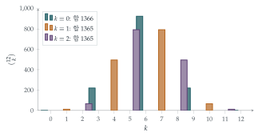

STEP I 1990, 문제 2
계속 읽기 전에 문제를 먼저 읽어 보자. 문제는 STEP Support Programme의 문제 데이터베이스에 있다: step.maths.org/questions/90-s1-q2
도입
파스칼의 삼각형(Pascal’s triangle)의 한 행에 있는 이항계수(binomial coefficient)를 모두 더하면 \(2^n\)이다. \((1 + x)^n\)에 \(x = 1\)을 대입하면 된다. 대신 \(x = -1\)을 대입하면 교대합(alternating sum)을 얻는데, 그 값은 \(0\)이다. 두 식을 더하면 짝수 번째 자리에 있는 계수의 합이 정확히 절반인 \(2^{n-1}\)임을 알 수 있다. 즉 짝수 번째 항과 홀수 번째 항이 전체 합을 똑같이 나누어 가진다.
그렇다면 세 번째마다 있는 계수는 어떨까? \(0, 3, 6, \ldots\)번째 자리만 골라내는 실수 \(x\)는 존재하지 않는다. 그러나 복소수(complex number) 중에는 그런 수가 있다. 1의 세제곱근(cube roots of unity)은 필터 역할을 한다. 거듭제곱 \(\omega^k\)를 \(1\), \(\omega\), \(\omega^2\)에 대하여 평균 내면, \(k\)가 \(3\)의 배수일 때는 \(1\)이 되고 그렇지 않을 때는 \(0\)이 된다. 이 아이디어, 즉 1의 거듭제곱근 필터(roots-of-unity filter)는 지금까지 고안된 가장 중요한 알고리즘(algorithm) 가운데 하나인 이산 푸리에 변환(discrete Fourier transform)의 축소판이다.
시작하기 전에
\(\omega\)는 \(z^3 - 1 = 0\)의 근이다. \(z^3 - 1\)을 인수분해(factorise)하여라. 이로부터 왜 \(1 + \omega + \omega^2 = 0\)이 성립하는가?
\(z^3 - 1 = (z - 1)(z^2 + z + 1)\)이다. \(\omega^3 = 1\)이지만 \(\omega \neq 1\)이므로, \(\omega\)는 두 번째 인수의 근이어야 한다. 즉 \(\omega^2 + \omega + 1 = 0\)이다. 기하학적으로 보면 \(1\), \(\omega\), \(\omega^2\)는 원점을 중심으로 하는 정삼각형(equilateral triangle)의 꼭짓점이고, 이들의 합은 삼각형의 무게중심(centre of mass), 곧 \(0\)이다.
차근차근 풀기
단계 1 절댓값과 편각
\(1 + \omega + \omega^2 = 0\)으로부터 \(1 + \omega^2 = -\omega\)이다. \(\omega = e^{2\pi\mathrm{i}/3}\)이므로 \(-\omega = e^{\mathrm{i}\pi}e^{2\pi\mathrm{i}/3} = e^{5\pi\mathrm{i}/3} = e^{-\pi\mathrm{i}/3}\)이다. 따라서 \(1 + \omega^2\)의 절댓값(modulus)은 \(1\)이고 편각(argument)은 \(-\frac\pi3\)이다. 마찬가지로 \(1 + \omega = -\omega^2 = e^{\pi\mathrm{i}/3}\)이고, 절댓값은 \(1\), 편각은 \(\frac\pi3\)이다.
단계 2 필터
\(k\)가 \(3\)의 배수일 때 \(1 + \omega^k + \omega^{2k}\)의 값은 무엇인가? \(3\)의 배수가 아닐 때는?
\(3 \mid k\)이면 \(\omega^k = 1\)이므로 합은 \(3\)이다. 그렇지 않으면 \(\omega^k\)는 \(\omega\) 또는 \(\omega^2\)이고, 어느 경우든 \(1 + \omega^k + \omega^{2k} = 1 + \omega + \omega^2 = 0\)이다. 따라서 식 \(\frac13(1 + \omega^k + \omega^{2k})\)는 \(3 \mid k\)일 때 \(1\)이고 그 밖의 경우에는 \(0\)이다. 즉 이 식은 \(3\)의 배수를 가려내는 판별기이다.
\(r = 1, 2, 3\)에 대하여 \((1 + \omega^r)^n\)을 각각 이항정리(binomial theorem)로 전개하여 모두 더하여라. 무엇을 얻는가?
\(\omega^3 = 1\)이므로 \[(1 + \omega)^n + (1 + \omega^2)^n + (1 + 1)^n = \sum_{k=0}^{n} \binom nk\bigl(\omega^k + \omega^{2k} + 1\bigr) = 3\sum_{3 \mid k} \binom nk.\] 한편 1단계에 의하여 \[(1 + \omega)^n + (1 + \omega^2)^n + 2^n = e^{n\pi\mathrm{i}/3} + e^{-n\pi\mathrm{i}/3} + 2^n = 2\cos\frac{n\pi}{3} + 2^n.\] 양변을 \(3\)으로 나누면 원하는 공식을 얻는다.■
단계 3 두 가지 계산
\(n = 25\)일 때, \(\frac{25\pi}{3} = 8\pi + \frac\pi3\)이므로 \(\cos\frac{25\pi}{3} = \frac12\)이고, \[\binom{25}{0} + \binom{25}{3} + \cdots + \binom{25}{24} = \frac{33554432 + 1}{3} = 11184811.\]
두 번째 합에서는 \(k \equiv 2 \pmod 3\)인 자리가 필요하다. \(k \equiv 0\) 대신 \(k \equiv 2\)를 가려내려면 필터를 어떻게 바꾸면 될까?
판별기를 평행이동한다. \(\frac13\bigl(1 + \omega^{k-2} + \omega^{2(k-2)}\bigr)\)는 정확히 \(k \equiv 2 \pmod 3\)일 때 \(1\)이다. \(\omega^{-2} = \omega\)이고 \(\omega^{-4} = \omega^2\)이므로 \[\sum_{k \equiv 2} \binom nk = \frac13\Bigl(2^n + \omega(1 + \omega)^n + \omega^2(1 + \omega^2)^n\Bigr).\] \(n = 24\)이면 \((1 + \omega)^{24} = e^{8\pi\mathrm{i}} = 1\)이고 마찬가지로 \((1 + \omega^2)^{24} = 1\)이므로, 괄호 안은 \(2^{24} + \omega + \omega^2 = 2^{24} - 1\)이다. \(2^{24} = 16777216\)이므로 \[\binom{24}{2} + \binom{24}{5} + \cdots + \binom{24}{23} = \frac{16777215}{3} = 5592405. \qed\]

돌아보기
1의 거듭제곱근에 대한 평균은 나머지(residue)에 따라 걸러 낸다. \(\frac13\sum_{r}\omega^{rk}\)는 \(3\)이 \(k\)를 나누는지에 따라 \(1\) 또는 \(0\)이다. 다항식(polynomial)의 값을 1의 거듭제곱근에서 구해 더하면 세 번째마다 있는 계수만 골라낼 수 있다.
필터 평행이동하기. 평균을 내기 전에 \(\omega^{-rj}\)를 곱하면 \(k \equiv j\)인 계수만 골라낸다.
실수 답을 위한 복소수. 답은 정수이고 문제도 정수에 관한 것이었지만, 풀이는 복소평면(complex plane)을 거쳐 갔다.
숨은 수학
\(3\)을 임의의 \(N\)으로, \(\omega\)를 \(e^{2\pi\mathrm{i}/N}\)로 바꾸어 보자. 수의 목록 \(a_0, a_1, \ldots, a_{N-1}\)에 대하여 수 \[\hat a_r = \sum_{k=0}^{N-1} a_k\,\omega^{rk}\] 들은 이 목록의 이산 푸리에 변환을 이루며, 필터 항등식 \(\sum_r \omega^{rk} = N\) 또는 \(0\) 덕분에 \(\hat a_r\)로부터 \(a_k\)를 복원할 수 있다. 이 변환은 신호를 그 구성 주파수들로 분해한다. 1965년 제임스 쿨리(James Cooley)와 존 튜키(John Tukey)는 이 변환을 \(N^2\)단계 대신 약 \(N\log_2 N\)단계 만에 계산하는 방법, 곧 고속 푸리에 변환(fast Fourier transform)을 발표하였다. 가우스(Gauss)는 1805년에 본질적으로 같은 아이디어를 발견하였지만 끝내 발표하지 않았다. FFT는 오디오와 이미지 압축(MP3와 JPEG), 휴대전화 신호, 의료 영상 장비, 그리고 엄청나게 큰 수의 곱셈에 쓰이며, 20세기의 가장 중요한 알고리즘 가운데 하나로 자주 꼽힌다.
생성함수
이 필터는 더 큰 아이디어의 한 사례이다. 수열(sequence) \(a_0, a_1, a_2, \ldots\)는 다항식이나 멱급수(power series) \(A(x) = \sum a_kx^k\)로 묶어 나타낼 수 있는데, 이것을 수열의 생성함수(generating function)라 한다. 그러면 수열에 대한 연산이 함수에 대한 연산이 된다. \(1\)에서 값을 구하면 수열의 합이 되고, 1의 거듭제곱근에서 값을 구하면 잉여류(residue class)를 골라내며, 미분하면 각 항에 \(k\)를 가중치로 곱하게 된다. 이 방법은 많은 세기 문제를 대수 문제로 바꾸어 주며, 9장의 핵심 기법이다. 같은 필터를 1의 다섯제곱근과 함께 \((1 + x)^n\)에 적용하면 정오각형(regular pentagon)과 황금비(golden ratio)로 이어진다. 1의 거듭제곱근의 대수는 6.1 절에서 더 깊이 다룬다.
사고 기술
합에서 어떤 조건을 만족하는 항만 골라내려면, 원하는 항에서는 \(1\)이고 나머지 항에서는 \(0\)인 함수를 대칭(symmetry)적인 평균으로 만들어라.
1의 거듭제곱근에 대한 평균이 대표적인 예이다. “대칭들의 군(group)에 대하여 평균을 내어 원하는 부분을 분리한다”는 같은 원리는 1의 거듭제곱근 필터부터 군의 표현론(representation theory)에 이르기까지 대수학 곳곳에 나타난다.
더 도전하기
짝수 번째 자리. 1의 제곱근(\(1\)과 \(-1\))으로 필터를 사용하여 \(\binom n0 + \binom n2 + \binom n4 + \cdots = 2^{n-1}\)임을 보여라.
나머지 한 부류. \(\binom n1 + \binom n4 + \binom n7 + \cdots\)에 대한 공식을 구하고, 세 공식을 더하면 \(2^n\)이 됨을 확인하여라.
네 번째마다. \(\mathrm{i}\)를 사용하여 \(\binom n0 + \binom n4 + \binom n8 + \cdots = \frac14\Bigl(2^n + 2^{n/2+1}\cos\frac{n\pi}{4}\Bigr)\)임을 보여라.
나누어떨어짐. \(\{1, 2, \ldots, 12\}\)의 부분집합(subset) 가운데 원소의 개수가 \(3\)으로 나누어떨어지는 것은 몇 개인가? 원소의 합이 \(3\)으로 나누어떨어지는 것은 몇 개인가? (두 번째 질문의 힌트: \(\prod_{j=1}^{12}(1 + x^j)\)를 1의 세제곱근에서 생각해 보아라.)
더 읽을거리
Herbert Wilf, generatingfunctionology (A. K. Peters; 온라인 무료 공개). 생성함수에 대한 즐거운 입문서로, 1의 거듭제곱근 필터가 앞부분에 나온다.
Arthur Benjamin & Jennifer Quinn, Proofs That Really Count (Mathematical Association of America). 이항 항등식을 세기로 증명하는 책이다.
T. W. Körner, Fourier Analysis (Cambridge University Press). 이산 푸리에 변환과 FFT를 다룬다.